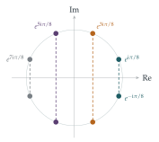

STEP III 2013, Question 4
Read the question before you go on. It is in the STEP Support Programme’s question database: step.maths.org/questions/13-s3-q4
The hook
What is \(\cos\frac{\pi}{8}\cos\frac{3\pi}{8}\cos\frac{5\pi}{8}\cos\frac{7\pi}{8}\)? Each factor is an ugly number involving nested square roots, but the product is exactly \(\frac18\). Products of cosines at equally spaced angles keep collapsing to simple numbers like this, and the question explains why. The trick is to recognise the angles as arguments of roots of a polynomial, factorise the polynomial, and then substitute a cleverly chosen value.
Over the complex numbers, every polynomial factorises completely into linear factors. Over the real numbers, the non-real roots come in conjugate pairs, which combine into real quadratic factors. Both facts are on display here, and the second is how \(z^{2n} + 1\), which has no real roots at all, can be written as a product of real quadratics.
Before you start
Where are the solutions of \(z^{2n} = -1\) in the complex plane? Draw them for \(n = 2\) and \(n = 4\).
They all have modulus \(1\), and their arguments \(\theta\) satisfy \(2n\theta = \pi + 2m\pi\), so \(\theta\) is an odd multiple of \(\frac{\pi}{2n}\). They form a regular \(2n\)-gon on the unit circle, rotated so that no vertex lies on the real axis (Figure 5.3.1). They pair up into conjugates \(e^{\pm\mathrm{i}\theta}\), mirror images in the real axis.
Working it through
Stage 1 Conjugate pairs give real quadratics
\((z - e^{\mathrm{i}\theta})(z - e^{-\mathrm{i}\theta}) = z^2 - (e^{\mathrm{i}\theta} + e^{-\mathrm{i}\theta})z + 1 = z^2 - 2z\cos\theta + 1\).■
Stage 2 The factorisation
The \(2n\)th roots of \(-1\) with \(-\pi < \theta \leq \pi\) are \(e^{\pm\mathrm{i}\theta_k}\) with \[\theta_k = \frac{(2k - 1)\pi}{2n}, \qquad k = 1, 2, \ldots, n.\] These are \(2n\) distinct numbers, all roots of the degree-\(2n\) polynomial \(z^{2n} + 1\), so they are all its roots and \[z^{2n} + 1 = \prod_{k=1}^{n}(z - e^{\mathrm{i}\theta_k})(z - e^{-\mathrm{i}\theta_k}) = \prod_{k=1}^{n}\bigl(z^2 - 2z\cos\theta_k + 1\bigr). \qed\]

Stage 3 Substituting \(z = \mathrm{i}\)
What is \(\mathrm{i}^2 - 2\mathrm{i}\cos\theta + 1\)? And what is \(\mathrm{i}^{2n} + 1\) when \(n\) is even?
Each factor becomes \[\mathrm{i}^2 - 2\mathrm{i}\cos\theta_k + 1 = -2\mathrm{i}\cos\theta_k,\] so the right-hand side is \((-2\mathrm{i})^n\prod_k\cos\theta_k\). The left-hand side is \(\mathrm{i}^{2n} + 1 = (-1)^n + 1\), which is \(2\) when \(n\) is even. And for even \(n\), \[(-2\mathrm{i})^n = 2^n(-\mathrm{i})^n = 2^n\bigl((-\mathrm{i})^2\bigr)^{n/2} = 2^n(-1)^{n/2}.\] So \[\prod_{k=1}^{n}\cos\theta_k = \frac{2}{2^n(-1)^{n/2}} = (-1)^{\frac12 n}2^{1-n}. \qed\] For \(n = 4\) this is the product in the hook: \((-1)^2 2^{-3} = \frac18\).
Stage 4 When \(n\) is odd
For odd \(n\), one of the angles \(\theta_k\) equals \(\frac\pi2\). Which one, and why does that make the substitution \(z = \mathrm{i}\) useless as it stands?
When \(k = \frac{n+1}{2}\), \(\theta_k = \frac{n\pi}{2n} = \frac\pi2\), so that factor is \(z^2 + 1\), which vanishes at \(z = \mathrm{i}\); both sides are \(0\), and we learn nothing. The way round is to divide out that factor first, which is what the given identity does.
Divide both sides of the factorisation by \(1 + z^2\), substitute \(z = \mathrm{i}\), and simplify. You will need to pair up the remaining cosines.
Dividing by the factor \(z^2 + 1\) (the term \(k = \frac{n+1}{2}\)), \[1 - z^2 + z^4 - \cdots + z^{2n-2} = \prod_{k \neq \frac{n+1}{2}}\bigl(z^2 - 2z\cos\theta_k + 1\bigr).\] At \(z = \mathrm{i}\), every term on the left is \((-z^2)^j = 1^j = 1\), and there are \(n\) terms, so the left-hand side is \(n\). The right-hand side is \((-2\mathrm{i})^{n-1}\prod_{k \neq \frac{n+1}{2}}\cos\theta_k\). Since \(n - 1\) is even, \((-2\mathrm{i})^{n-1} = 2^{n-1}(-1)^{(n-1)/2}\).
Now pair the angles: \(\theta_{n+1-k} = \pi - \theta_k\), so \(\cos\theta_{n+1-k} = -\cos\theta_k\). The \(n - 1\) remaining factors form \(\frac{n-1}{2}\) such pairs, with \(k = 1, \ldots, \frac{n-1}{2}\), and each pair contributes \(-\cos^2\theta_k\). So \[n = 2^{n-1}(-1)^{(n-1)/2}\cdot(-1)^{(n-1)/2}\prod_{k=1}^{(n-1)/2}\cos^2\theta_k = 2^{n-1}\prod_{k=1}^{(n-1)/2}\cos^2\theta_k,\] giving \(\prod\cos^2\theta_k = n2^{1-n}\). The last factor, with \(k = \frac{n-1}{2}\), is \(\cos^2\frac{(n-2)\pi}{2n}\), as in the question.■
Check with \(n = 3\): \(\cos^2\frac\pi6 = \frac34 = 3 \cdot 2^{-2}\).
Looking back
Know the roots, know the polynomial. A polynomial is determined (up to a constant) by its roots, so listing the roots of \(z^{2n} + 1\) gave its factorisation.
Substitute a clever value. Putting \(z = \mathrm{i}\) turned every quadratic factor into a multiple of a cosine.
When a substitution gives \(0 = 0\), divide first. For odd \(n\) one factor vanished at \(z = \mathrm{i}\), so we removed it before substituting.
What’s really going on
That \(z^{2n} + 1\) can be factorised completely into linear factors over \(\mathbb{C}\) is a special case of the fundamental theorem of algebra: every non-constant polynomial with complex coefficients has a complex root, and so factorises completely into linear factors. Gauss gave the first widely accepted proof in his doctoral thesis of 1799, and returned to the theorem several times with new proofs. A consequence is that every real polynomial factorises into real linear and quadratic factors, because non-real roots come in conjugate pairs, exactly as in Stage 1. The theorem is “algebraic” in name but analytic in substance: every proof uses some property of the real numbers, such as continuity, and you will see one of the slickest proofs in a first course on complex analysis.
Products of sines and cosines
The method gives a whole family of identities. Using \(z^n - 1\) in place of \(z^{2n} + 1\) leads to \[\prod_{k=1}^{n-1}\sin\frac{k\pi}{n} = \frac{n}{2^{n-1}},\] which is proved, in its geometric form, in Section 5.4. Identities like these appear in the analysis of vibrating systems (the frequencies of \(n\) masses joined by springs involve \(\sin\frac{k\pi}{2(n+1)}\)) and in counting problems (the number of spanning trees of some graphs, and the number of domino tilings of a rectangle, are given by products of cosines). Kasteleyn’s 1961 formula for domino tilings of an \(m \times n\) rectangle is a double product of expressions in \(\cos^2\frac{j\pi}{m+1}\) and \(\cos^2\frac{k\pi}{n+1}\).
The thinking skill
To evaluate a product of trigonometric values at equally spaced angles, recognise them as coming from the roots of a simple polynomial, factorise, and substitute a convenient value.
The choice of value is the art: here \(z = \mathrm{i}\) turned each quadratic factor into a cosine. Other choices (such as \(z = 1\) or \(z = -1\)) give other identities.
Try this next
A heptagonal product. Use part (ii) with \(n = 7\) to show that \(\cos\frac{\pi}{14}\cos\frac{3\pi}{14}\cos\frac{5\pi}{14} = \frac{\sqrt7}{8}\). Then show that \(\cos\frac{\pi}{7}\cos\frac{2\pi}{7}\cos\frac{3\pi}{7} = \frac18\). (Hint: relate the angles using \(\cos\theta = \sin(\frac\pi2 - \theta)\), or use the identity \(\sin 2x = 2\sin x\cos x\) repeatedly.)
Another substitution. Substitute \(z = 1\) in the factorisation to show that \[\prod_{k=1}^{n}\sin\frac{(2k-1)\pi}{4n} = 2^{\frac12 - n}.\]
Factorise \(z^6 + 1\). Write \(z^6 + 1\) as a product of three real quadratics, and check your answer by multiplying out.
Sines. By factorising \(z^{2n} - 1\) similarly and dividing by \(z^2 - 1\), show that \[\prod_{k=1}^{n-1}\sin\frac{k\pi}{2n} = \frac{\sqrt n}{2^{n-1}}.\]
Further reading
Tristan Needham, Visual Complex Analysis (Oxford University Press). Chapter 2 on roots of unity and polynomials, with beautiful pictures.
Benjamin Fine & Gerhard Rosenberger, The Fundamental Theorem of Algebra (Springer). Several proofs of the theorem, from analysis, algebra and topology, written for undergraduates.
Paul Nahin, An Imaginary Tale (Princeton University Press). A history of \(\sqrt{-1}\), including roots of unity and their uses.